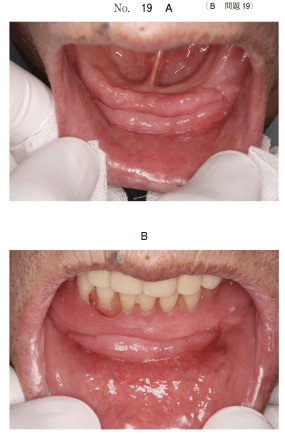
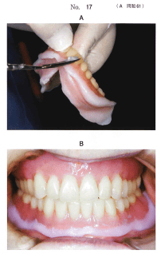

旧義歯の咬合接触状態を検査することは、義歯調整や新義歯製作において重要である。
| 検査方法 | 内容 |
|---|---|
| タッピング運動 | 指先で義歯の動揺を触診 |
| 咬合紙 | 印記状態を観察 |
| シリコーンゴム印象材 | 被膜厚を観察（適合試験材） |
| チェックバイト | 下顎後退位での咬合関係を検査 |
人工歯の咬耗や顎堤吸収により、義歯の咬頭嵌合位における下顎頭位は顎頭安定位と一致していない場合がある。このような場合は、下顎後退位に誘導してチェックバイトを採得する。
義歯の使用により顎堤粘膜に生じた歪みや圧痕などの状態を正常な組織のレベルにまで回復させる治療を粘膜調整という。
粘膜調整を行うときには義歯の咬合関係も検査し、咬合関係が不良な場合は粘膜調整の前に咬合の修正が必要である。
旧義歯の不適合により生じた粘膜病変に対しては、適切な処置が必要である。
| 状態 | 対応 |
|---|---|
| 床縁からの刺激がある場合 | まず床縁の削除を行う |
| 肉芽型 | 義歯の形態修正で治癒することがある |
| 線維型 | 外科的切除が必要 |
注意：腫瘤の原因となっている刺激を除去することが優先。いきなり切除や義歯新製ではない。
78歳の男性。下顎前歯部床下粘膜の疼痛を主訴として来院した。15年前に義歯を装着した。6か月前から下顎前歯部の腫瘤に気付き、3週前から咬合時に痛みを感じていたという。初診時の口腔内写真（別冊No.19A）と義歯装着時の口腔内写真（別冊No.19B）とを別に示す。
まず行う処置はどれか。1つ選べ。

【解説】義歯床縁からの慢性刺激による義歯性線維腫と考えられる。まず原因となっている床縁の削除を行い、刺激を除去する。腫瘤の切除は刺激除去後に改善しない場合に検討する。
68歳の女性。食事時の咀嚼困難を主訴として来院した。8年前に上下顎全部床義歯を製作し問題なく使用していたが、2週前から咀嚼時の義歯床下粘膜の疼痛を自覚するようになったという。診察の結果、新義歯を製作するため、概形印象を採得することとした。ある処置の操作中の写真（別冊No.17A）と操作後の義歯装着時の口腔内写真（別冊No.17B）を別に示す。
この処置の目的はどれか。1つ選べ。

【解説】写真はティッシュコンディショナー（粘膜調整材）を用いた処置。粘膜調整の目的は義歯床下粘膜の歪みの解放であり、不適合な義歯による圧痕や歪みを回復させる。咬合接触関係の修正は粘膜調整とは別の処置。